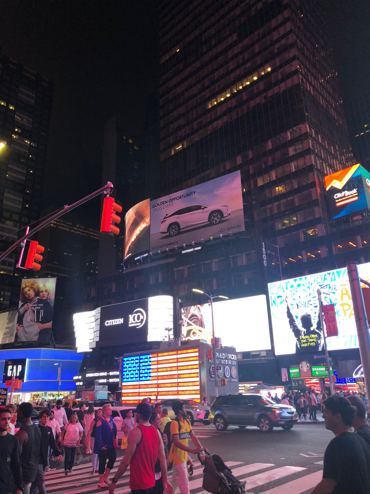

Central Park
Here is beautiful Central Park caught in a quiet moment on a September afternoon. The Park is perfect for a relaxing walk or picnic. A great place to get out of the boring gym and get in some exercises among the scenery. If you're not into that there's more to explore, sculptures are found sprinkled around the park. There are plenty of sites for impromptu photoshoots or taking a scenic trip in boats. Here I am on a Central Park bridge taking advantage of Golden Hour and getting a quick picture! You can see I came to check out Central Park after a beautiful day at the MET! Never a dull moment!
Metropolitan Museum of Art
My favorite museum in New York City! There are so many breathtaking museums to visit such as the Museum of Modern Art but for your first time plan a dat at the MET! There's no way you could visit all the exhibits in one day so its always amazing to take on a new one each time you visit! You can take in the splendor of all the classic Greek and Roman sculptures, Paintings of all styles and eras, along with beautiful sculptures and fashion installations. There's never a shortage of beauty and things to discover when you stroll through the MET! Bring along your best Art friends and experience Art by the greats!!! Here I am with my friends on the legendary steps after a day of art and shopping!
Chinatown & Little Italy
Canal St. and Mulberry St. are home to great food and are staples when you visit New York City! I always love to visit Chinatowns in any city I go to. It's awesome to see how different they are whereever you go whether it be in the Big Apple or the city of Angels! I take the time to walk through China Town looking at all the shops and markets. My friend even got her aura read at one of the shops. It's a great place to experience and share with others. Little Italy is its own great experience and my personal favorite. I am always ready to eat when I travel to Mulberry Street. Be sure to pick up a fresh cannoli as you look over all the shops then take a break from all that walking and get a great plate of pasta to renenergize!

Timesquare
There's no way to come to New York City and not be in total awe of all the lights in Timesquare! Experience some great Broadway shows or just walk around with friends under all the lights! There's plenty of stores and souvenier shops to explore!
